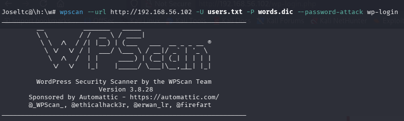

Write‑up completo · José Luis Trigo Calvo

El contenido de este documento refleja el proceso de resolución de un CTF (Capture The Flag) con fines estrictamente educativos. Todas las herramientas y comandos empleados se han utilizado en un entorno controlado y autorizado, como parte de mi formación como ethical hacker. No se ha realizado ninguna actividad ilícita ni se ha atacado ningún sistema real sin consentimiento. El único propósito de este trabajo es el aprendizaje y la mejora de las habilidades en ciberseguridad.
Ambas máquinas se encuentran dentro de una misma interfaz de red.
Con el comando ip a comprobamos la IP que ha sido asignada a nuestra máquina Kali Linux. (IP Kali Linux → 192.168.56.101)
Con el comando sudo nmap -sn 192.168.56.0/24 buscamos la IP de nuestra máquina MR Robot.

Ahora procederemos a escanear la máquina Mr Robot más a fondo para saber los servicios que está prestando y en qué puertos. Para ello utilizaremos el comando nmap -sV 192.168.56.102.

Como vemos, la máquina tiene abiertos los puertos 22 (SSH), 80 (HTTP) y 443 (HTTPS). Al introducir la IP en el navegador, comprobamos que el servidor web funciona correctamente y nos muestra una página con pistas.

Ahora que sabemos que hay un servidor web, vamos a realizar un escaneo de enumeración web con Nmap para descubrir directorios y archivos ocultos.

Este comando nos da mucha información. Sabemos que estamos ante un sitio WordPress y que el servidor tiene algunos archivos interesantes, como robots.txt.
Para complementar, utilizamos gobuster para un fuzzing más completo:

Entre los hallazgos, el archivo robots.txt nos revela dos archivos:

Descargamos ambos con wget:
La primera key es:

El diccionario fsocity.dic contiene posibles nombres o contraseñas para WordPress.

Los usuarios y contraseñas comunes no funcionan, así que usaremos el diccionario obtenido.
Para reducir el tiempo, eliminamos duplicados:
Como es temática, creamos un archivo con nombres de personajes de la serie:

Lanzamos el ataque de fuerza bruta con WPScan:

Probamos con el usuario Elliot y accedemos al panel de WordPress.

Segunda opción: En el directorio /license encontramos una pista adicional.


Desciframos con:
Ahora, para obtener una shell reversa, editaremos un plugin de WordPress e insertaremos código PHP de reverse shell (obtenido de pentestmonkey/php-reverse-shell).

Importante: La IP en el código debe ser la de la máquina atacante (Kali).
En una terminal de Kali, abrimos un listener con nc:
Activamos el plugin desde WordPress y obtenemos la shell:

Una vez dentro, exploramos el sistema:

Encontramos el directorio /home/robot con los archivos key-2-of-3.txt y password.raw-md5.

No tenemos permisos para leer key-2-of-3.txt, pero sí podemos ver password.raw-md5:
El hash MD5 se descifra fácilmente (por ejemplo, con dCode.fr) y obtenemos la contraseña: abcdefghijklmnopqrstuvwxyz.

Intentamos cambiar al usuario robot con su robot, pero la terminal no permite ejecutar comandos root. Buscamos binarios SUID:

Entre ellos, nmap (versión 3.81) es vulnerable a una escalada mediante el modo interactivo. Consultamos este artículo.
Ejecutamos:
Una vez dentro, somos root. Podemos leer la segunda key:

Buscamos la tercera key con find:

La leemos:
| Key | Valor |
|---|---|
| Key 1 | 073403c8a58a1f80d943455fb30724b9 |
| Key 2 | 822c73956184f694993bede3eb39f959 |
| Key 3 | 04787ddef27c3dee1ee161b21670b4e4 |
| Herramienta | Uso |
|---|---|
| Nmap | Descubrimiento de hosts y escaneo de puertos |
| Gobuster | Fuzzing de directorios web |
| WPScan | Ataque de fuerza bruta a WordPress |
| netcat (nc) | Establecimiento de reverse shell |
| find | Búsqueda de binarios SUID |
La resolución de la máquina MR Robot me ha permitido poner en práctica técnicas fundamentales de ciberseguridad ofensiva:
robots.txt, fsocity.dic)